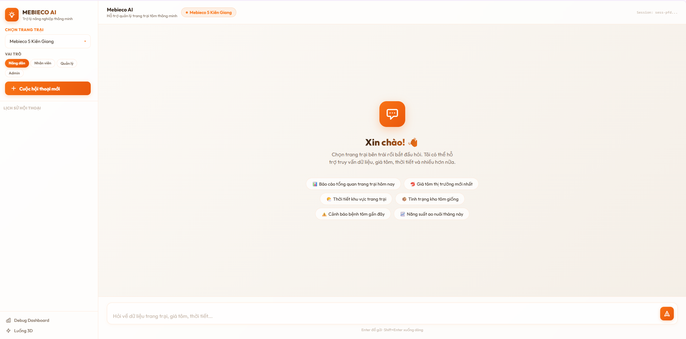
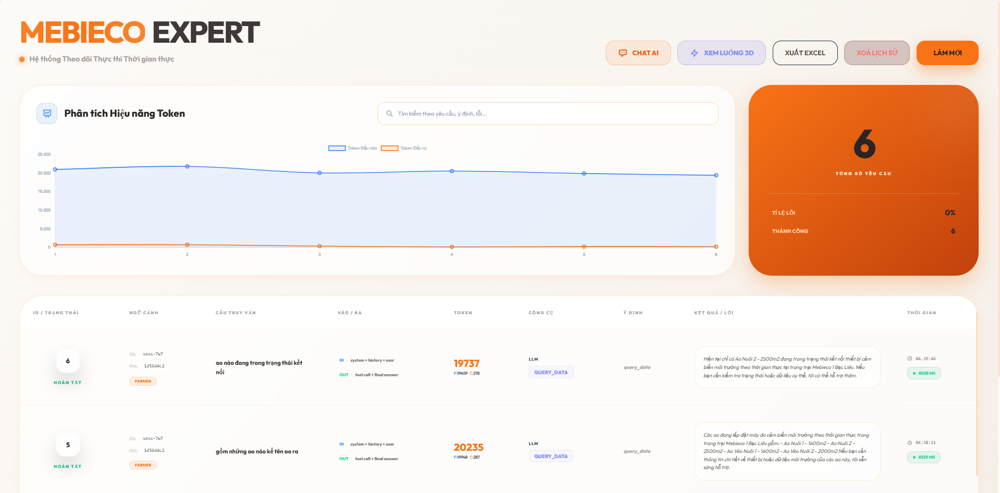
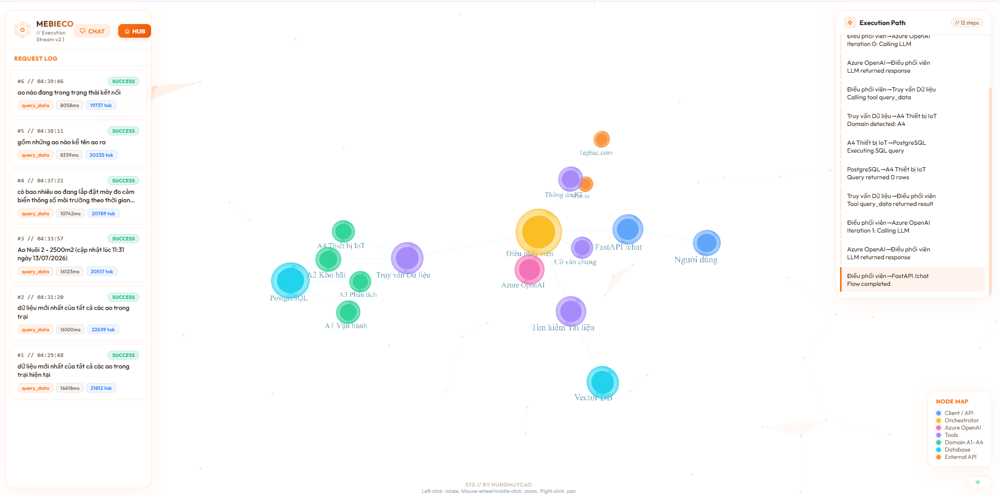

Mebieco AI Chatbot
Hệ thống trợ lý ảo thông minh kết hợp RAG & Text-to-SQL



Tổng quan dự án
Mebieco AI Chatbot là một hệ thống trợ lý ảo thông minh cấp doanh nghiệp, được thiết kế để giải quyết bài toán truy xuất thông tin tự động từ cả hai nguồn dữ liệu: dữ liệu phi cấu trúc (chính sách, tài liệu hướng dẫn) và dữ liệu có cấu trúc (cơ sở dữ liệu giao dịch, doanh số).
Hệ thống hoạt động như một cầu nối ngôn ngữ tự nhiên (Natural Language Interface) kết hợp Voice Realtime giúp nhân viên và quản lý có thể nhanh chóng tra cứu thông tin vận hành phức tạp bằng giọng nói hoặc văn bản mà không cần viết SQL hay tìm kiếm thủ công qua hàng trăm trang tài liệu PDF.
Kiến trúc kỹ thuật & Giải pháp
Để đạt được độ chính xác cao và thời gian phản hồi dưới 1.5 giây, hệ thống sử dụng mô hình kết hợp (Hybrid AI Engine):
-
RAG (Retrieval-Augmented Generation): Sử dụng
Azure OpenAI Text-Embedding-3-Largeđể vector hóa tài liệu chính sách, lưu trữ vàoPostgreSQL pgvectorvới chỉ mụcHNSWđể tối ưu tốc độ tìm kiếm khoảng cách cosine. - Text-to-SQL (Vanna.ai): Huấn luyện mô hình sinh SQL dựa trên cơ sở schema dữ liệu có cấu trúc, tự động biên dịch câu hỏi tiếng Việt của người dùng thành truy vấn SQL chuẩn xác, thực thi an toàn trên Read-replica Database.
- Cơ chế định tuyến (Query Routing): Một bộ phân loại thông minh (Router) sẽ phân tích ý định câu hỏi để quyết định kích hoạt luồng RAG, luồng SQL hoặc chuyển tiếp trực tiếp sang LLM.
-
Caching & Rate Limiting: Tích hợp
Redislàm bộ nhớ đệm cho các truy vấn SQL lặp lại và kiểm soát lưu lượng request.
Trình giả lập Backend API Sandbox
Hãy click vào các hành động mẫu bên dưới để xem hệ thống Backend API (FastAPI) phân tích ý định, sinh truy vấn SQL, truy xuất vector và trả về kết quả thời gian thực trên màn hình Terminal mô phỏng bên cạnh: